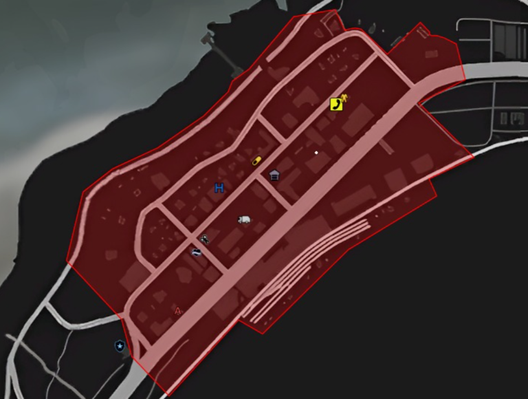

Nada encontrado
Tente outro termo.
LIVRO DE REGRAS
O descumprimento das regras descritas neste documento pode gerar BANIMENTO INDETERMINADO. Atente-se a todas elas.
Observações
- 1Todas as regras abaixo descritas deverão ser cumpridas sem exceções. O rompimento de qualquer uma delas acarretará em punições determinadas única e exclusivamente pela Administração do Vila Carioca.
- 2Este documento contém todas as regras para o bom e saudável funcionamento e andamento do servidor. Qualquer regra que não esteja neste livro de regras não se aplica ao sistema de punições, a menos que orientado especificamente por um administrador competente. (Importante sempre guardar provas das orientações recebidas.)
- 3É fundamental que os players estejam constantemente atualizados das regras e de suas alterações/atualizações.
MONITORAMENTO E PRODUÇÃO DE PROVAS
Todos os jogadores estão sujeitos à constante análise pela administração do servidor para garantir o cumprimento efetivo das regras.
1. Infrações e penalidades
- 1.1. Jogadores que descumprirem regras ou não contribuírem para um ambiente sadio e justo estão sujeitos a punições administrativas.
- 1.2. A administração tem autonomia para coletar evidências e banir ou suspender qualquer jogador do servidor.
- 1.2.1. Capturas de tela, vídeos, prints e arquivos de áudio são considerados meios de prova para punições administrativas.
- 1.2.2. A palavra de um administrador é igualmente considerada prova suficiente para suspensão ou banimento.
2. Monitoramento e uso de softwares terceiros
- 2.1. A administração tem total autonomia para monitorar e suspeitar do uso de softwares terceiros para obter vantagem dentro do servidor.
- 2.2. Jogadores suspeitos de utilizar tais softwares podem passar por procedimentos de averiguação para que voltem a ser liberados no servidor. Os procedimentos são detalhados a seguir.
Do procedimento de averiguação
Embora ninguém seja obrigado a aceitar a telagem, a administração poderá manter permanentemente banido quem a recusar, por suspeita de uso de softwares maliciosos, prezando pelo bom andamento do servidor e fazendo valer as regras de monitoramento administrativo e produção de provas.
1. Suspensão temporária
- 1.1. Ao suspeitar de um jogador, a administração poderá suspendê-lo temporariamente.
- 1.2. A suspensão visa impedir que o jogador prejudique o servidor durante a averiguação.
- 1.3. A suspensão será sempre comunicada ao jogador.
2. Prazos para contato com a administração
- 2.1. Se logado, prazo de 1 hora para iniciar contato.
- 2.1.1. O jogador logado poderá ter sua tela travada com uma mensagem solicitando o início do contato com a administração e, portanto, NÃO deverá deslogar até que a averiguação seja concluída.
- 2.2. Se deslogado, prazo de 12 horas para iniciar contato.
- 2.3. Após iniciar o contato, o jogador não deverá demorar mais que 15 minutos para responder às consequentes exigências da administração.
- 2.4. Descumprir os prazos estipulados pode resultar em banimento permanente do jogador.
3. Procedimento de telagem
- 3.1. O jogador, ao iniciar o contato com a administração, deverá seguir as instruções para ser telado via Echo e AnyDesk.
- 3.1.1. Os arquivos são benignos, sem risco ao computador, com documentação disponível online.
- 3.2. O jogador deve manter contato com a administração durante todo o processo.
4. Decisões após a telagem
- 4.1. Liberação, se não houver observância de arquivos maliciosos.
- 4.2. Banimento permanente, se observados:
- 4.2.1. Softwares desinstalados;
- 4.2.2. Computador reiniciado ou formatado;
- 4.2.3. Arquivos suspeitos apagados;
- 4.2.4. Rastros de scripts ou programas proibidos;
- 4.2.5. Interrupção de processos nativos;
- 4.2.6. O item 4.2.5 consiste em casos como Windows Otimizados (versões não oficiais) que visam desativar processos suspeitos e afins;
- 4.2.7. Acesso em Discord de cheat.
5. Recusa da telagem
Jogadores que recusarem a telagem serão banidos por suspeita de cheat.
6. Sigilo e divulgação
- 6.1. O Vila Carioca não divulga os resultados das telagens, tampouco armazena dados relativos a elas, utilizando isso apenas como medida para proteger os interesses da comunidade.
- 6.1.1. Exceção: nos casos em que o jogador de má-fé tentar difamar o servidor após o banimento, o Vila Carioca poderá divulgar, por meio de suas redes, que determinado jogador foi banido por uso de softwares maliciosos.
- 6.1.2. Esta medida será tomada apenas em casos excepcionais, com o objetivo de proteger a imagem do servidor.
O Vila Carioca preza tanto pela transparência quanto pela segurança e preservação da imagem dos seus jogadores e ex-jogadores. Essas regras visam criar um ambiente justo e sadio para todos.
REGRAS DO DISCORD
Regras para contato e uso dos canais no Discord.
- 1O contato com membros da staff via mensagem direta deve ser feito de forma clara e objetiva, explicando desde o início o motivo do contato e qual a sua dúvida ou necessidade, para que possamos agilizar o atendimento.
- 2É proibido fazer qualquer tipo de divulgação não autorizada no chat geral do Discord. Divulgações devem ser feitas apenas em salas destinadas a isso.
- 3É proibido utilizar canais específicos para fins aos quais eles não foram destinados. (Exemplo: a sala de divulgação não deve ser utilizada como bate-papo.)
- 4Denúncias ou reports de bugs devem ser feitos mediante vídeo e explicação do ocorrido, pelo ticket.
REGRAS DE PERSONAGEM
- 1Os personagens não devem conter nomes de cunho ofensivo, que não tenham relação ou que não condizem com a história e/ou interpretação do personagem.
- 2Personagens adicionais não poderão compartilhar nenhum item, dinheiro, carro, tampouco ter relação de parentesco com seu personagem principal.
- 3Os que forem setados em facções e tiverem segundo personagem na polícia não poderão logar no personagem caso a facção do personagem principal esteja participando de uma guerra — mesmo que ele tenha morrido. O personagem secundário só poderá ser utilizado ao fim da guerra.
- 4Os personagens que forem setados em facções e saírem da mesma por qualquer motivo (PD, escolha própria, motivos pessoais, entre outros) não poderão regressar a essa facção ou juntar-se a outras por um prazo mínimo de 15 (quinze) dias corridos.
REGRAS GERAIS
- 1A discriminação é proibida expressamente, como consta no art. 3º, IV da Constituição Federal, onde se dispõe que, entre os objetivos fundamentais da República Federativa do Brasil, está: promover o bem de todos, sem preconceitos de origem, raça, sexo, cor, idade e quaisquer outras formas de discriminação.
- 2Não é permitido sair do roleplay sob nenhuma circunstância.
- 3É proibido fazer chamados para qualquer serviço com intuito de sequestrar, roubar ou emboscar alguém que esteja em serviço.
- 4Toda ação que ocorra no servidor, seja contendo PvP ou não, deve ser gravada e apresentada a um administrador, caso solicitada. Por exemplo: ações fechadas, ações de rua, guerras entre facções, RP de cobranças, sequestros etc.
- 4.1. A gravação deve ser feita de forma completa, ou seja, sem cortes, além de conter áudio.
- 4.2. A gravação deve ser arquivada por no mínimo 48 horas.
- 5Em caso de policiais sequestrados, eles podem sim ter alguns pertences subtraídos: celular e rádio. Caso algum armamento seja retirado dos policiais, os mesmos precisam ser entregues para algum administrador ao fim do roleplay.
- 6Você não pode pegar uma pessoa nocauteada, reanimá-la e obrigá-la a passar informação, roubá-la ou qualquer outra ação.
- 7É extremamente proibido qualquer RP envolvendo assédio, importunação sexual, racismo, preconceito, homofobia, xenofobia ou suicídio.
- 8Estando em serviço legal, fica proibido qualquer tipo de atividade ilegal.
- 9Após ser nocauteado propositalmente por outra pessoa, você esquece de todo o ocorrido automaticamente, mesmo que seja reanimado.
- 10As armas de caça são de uso exclusivo da profissão de caçador. O uso da arma fora dessa profissão acarreta em banimento indeterminado do servidor.
- 11Quantidade máxima permitida de pessoas no porta-malas de veículos: duas (2).
- 12É proibido todo e qualquer tipo de comercialização de itens VIP.
- 13É proibido Metagaming, RDM, VDM, Combat Logging, Power-RP, falta de amor à vida, Anti-RP, cheating e abuso de bugs.
- 14É proibido fazer qualquer tipo de modificações visuais e sonoras de maneira que obtenha alguma vantagem em relação à configuração padrão ou que interfiram diretamente na dinâmica do roleplay. Exemplos proibidos:
- Modificar citizen (remover a noite, água, confete);
- Utilizar mods gráficos que removem itens/props;
- Mods de armas (alterar cores e modelos);
- Mods de som que alteram os passos.
- 15Proibida aliança de qualquer facção em ações de rua e resgates.
- 15.1. Permitida a aliança em ações fechadas.
- 16Fica proibido atirar no corpo de jogadores que já estejam desmaiados. Todo e qualquer disparo realizado no corpo de um rival será considerado flame e estará sujeito a punição.
Regras complementares
- O jogador que for morto em uma troca de tiro fica impedido de voltar para resgatar corpos ou carros, independentemente de vestimenta ou modo com que foi resgatado.
- Ao cair em uma ação de rua, o jogador fica proibido de voltar a interagir com a mesma, sob qualquer circunstância.
- Durante qualquer ação que envolva troca de tiro (guerra, treta de rua, sequestro etc.), os jogadores não podem remover a roupa da facção para fins de recuperação de corpos e/ou outros. A identidade da facção deve ser mantida em todas as circunstâncias.
- O jogador não setado em uma facção só poderá participar de atividades ligadas a roleplay, ficando proibido de participar de tretas de rua, guerras etc., mesmo que seja para trocar tiro, resgatar corpo/carro ou qualquer outra interação.
- O sistema de HP ilegal deve ser utilizado como recurso primário para evitar a necessidade de resgatar corpos após incidentes na rua (guerras, tretas, entre outros).
- Fica proibida a utilização de qualquer veículo alugado para realizar ações de fuga, troca de tiro, entre outras. Isso inclui o helicóptero de aluguel, cujo único objetivo é transporte.
Proibida a desova de corpo.
METAGAMING
- 1É estritamente proibido o uso de informações obtidas fora do ambiente do roleplay (fora do jogo) para beneficiar, influenciar ou modificar qualquer ação dentro do servidor. Exemplo: utilizar informações de transmissões ao vivo (streams), conversas em Discord, chats privados ou qualquer outro meio externo para descobrir a localização de alguém, antecipar ações, identificar personagens ou tomar decisões em RP.
Casos comuns de Metagaming
- 2Observar uma stream de outro jogador para saber onde ele está, o que está fazendo ou com quem está interagindo, e usar essa informação dentro do jogo.
- 3Receber informações por mensagem (Discord, WhatsApp etc.) durante uma ação e utilizá-las imediatamente no jogo.
- 4Se organizar para encontrar amigos ou inimigos usando GPS ou locais combinados fora do RP (como "vem aqui na praça" dito no Discord).
- 5Chamar reforço ou aliados usando meios de comunicação fora do jogo, sem realizar o contato via rádio ou celular dentro do RP.
- 6Sair do personagem para falar frases como: "Vim aqui porque vi na live que você tava aqui.", "Meu amigo me disse que você estava nessa quebrada." ou "Vi você no Discord e vim aqui."
Todas essas situações configuram Metagaming e podem resultar em punições severas, como banimento temporário ou permanente, dependendo da gravidade.
RANDOM DEATHMATCH (RDM)
- 1RDM (Random Death Match) é a prática de matar outro jogador sem motivo coerente ou contexto válido dentro do roleplay. Ou seja, é quando um jogador mata outro sem justificativa narrativa, apenas pelo desejo de matar ou gerar confusão.
VEHICLE DEATHMATCH (VDM)
- 1É a ação de usar veículos como arma para matar ou atropelar alguém propositalmente.
COMBAT LOGGING (CL)
- 1Deslogar durante uma ação em que você esteja participando direta ou indiretamente é proibido. Não é permitido deslogar apenas por medo de ser abordado pela polícia/assaltante ou durante ações como:
- Sequestro;
- Fuga;
- Troca de tiros;
- Transporte para o presídio;
- Entre outras situações similares.
Obs.: em caso de crash durante uma ação em que o PvP já tenha sido iniciado, o jogador deve voltar para o servidor e sair da ação imediatamente. Além disso, deve reportar o crash no canal específico no Discord.
PERMA DEATH (PD)
Existem dois tipos de PD
- PD da Facção: é quando você morre para ser retirado da sua facção e é obrigado a esquecer tudo relacionado à facção e às pessoas nela.
- PD do Personagem: é quando você fez algo gravíssimo e perdeu definitivamente o seu personagem. É sobre ele que falamos a seguir.
Você não teve amor à sua vida, o bem mais sagrado que você possui, e infelizmente seu personagem vai partir dessa pra melhor e você nunca mais poderá jogar com ele novamente.
O PD do Personagem é respeitado na maioria das cidades, entre quem realmente sabe respeitar a história do personagem, e tem alguns outros que metem o louco e ressurgem igual uma fênix.
Na Vila Carioca, aparecer com o mesmo personagem que tomou PD é BAN INDETERMINADO. Se fizer um novo personagem com as mesmas características, ou com qualquer vínculo relacionado ao personagem que tomou PD, você será punido com BAN INDETERMINADO.
Motivos que levam um personagem a tomar PD
Qualquer indício de falta de amor à vida vai te fazer perder o direito de manter o personagem:
- Pode dar motivos para os seus sequestradores te matarem?
- Não, você deve convencer eles de que você merece viver.
- Pode dar de herói tentando trocar tiro contra um rival que está em clara maioria numérica armada?
- Não. Se estiver nítido que o rival está em maioria numérica armada, você não é o 007 pra sair matando todo mundo.
- Pode ficar usando rádio e celular na frente dos sequestradores, sem autorização deles?
- Não, você valoriza a sua vida e não tem coragem de fazer qualquer coisa que possa fazer os sequestradores te matarem.
- Qualquer outra situação não citada aqui é permitida?
- Não, apenas citamos exemplos para deixar bem clara a linha de raciocínio.
- Eu fiz uma situação anti-amor à vida e fiquei vivo, o que acontece?
- Tudo bem: se você não morreu, segue o jogo, teve sorte. Mas, se morresse, teria consciência de que teria tido o PD autorizado pela administração.
- Fui sequestrar o cara e ele desrespeitou todo mundo com arma na cara. Posso pedir o PD?
- Sim, pode solicitar à Administração, que vai analisar tudo e decidir se foi motivo de PD ou não.
- Um bandido perdeu a fuga, estava com 5 policiais apontando a arma pra ele e mesmo assim puxou a arma e atirou. É caso de PD?
- Sim, se ele morrer, vai tomar PD. Se conseguir fazer mágica, matar todo mundo e sair vivo, segue o jogo.
- As pessoas podem se revoltar com a morte de quem tomou PD e cobrar?
- Não, quem tomou PD foi punido administrativamente e você não deve prosseguir um RP de cobrança.
- Se, durante o RP de sequestro, os sequestradores fizerem um RP para que você faça algo no celular e deixarem claro que estão olhando, vou tomar PD se fizer o contrário?
- Você deve fazer exatamente o que eles estão falando. Se os sequestradores te denunciarem e a administração investigar a situação, caso você tenha feito o contrário do que o RP propôs, terá o PD autorizado.
AMOR À VIDA
- 1O princípio de Amor à Vida é fundamental no roleplay. Todo jogador deve agir como agiria na vida real em situações de risco, sempre valorizando sua própria vida e a dos demais personagens.
O que configura quebra de Amor à Vida
- 2Reagir a um assalto com duas ou mais pessoas apontando armas para você, mesmo sem chance real de escapar.
- 3Sacar ou atirar com arma em situações em que você está em clara desvantagem numérica ou estratégica.
- 4Usar rádio ou celular durante sequestros ou sob mira, sem autorização dos sequestradores.
- 5Ameaçar, provocar ou afrontar alguém visivelmente armado sem ter suporte ou motivo coerente no RP.
- 6Agir com imprudência extrema, como tentar fugir pulando de locais muito altos, atravessar áreas controladas por facções rivais sem planejamento ou correr em direção a um tiroteio sem estar envolvido.
Consequência: a quebra dessa regra poderá resultar em PD (permadeath) — morte permanente do personagem — além de punições administrativas.
Sempre se pergunte: "Eu faria isso se fosse minha vida real?" Se a resposta for não, então não faça no RP. O Amor à Vida mantém a imersão e o respeito pelas histórias dentro do servidor.
ANTI ROLEPLAY
- 1Ter condutas que vão contra o bom andamento do roleplay, ou tomar atitudes que vão contra a história do seu personagem.
- 2É proibido qualquer ato de corrupção na Polícia ou no Hospital.
FLAMING
- 1O flame é o ato de querer atingir deliberadamente outro jogador de maneira física e/ou verbal. É proibido o flame direcionado ao jogador (pessoa) que envolva questões externas (fora do RP). Os xingamentos ao personagem (dentro do RP) que tenham contexto nos acontecimentos do roleplay não são considerados flame. Cada denúncia será analisada de forma individual, levando em consideração o histórico e o bom senso.
- 2Não será permitido atingir outro jogador por meio de referências ofensivas a pessoas próximas, vida pessoal, relacionamentos ou familiares. O foco do RP deve permanecer nos personagens envolvidos na situação.
SAFEZONES
POWER GAMING (PG)
- 1É expressamente proibido utilizar veículos para causar danos, como colidir, rodar ou capotar intencionalmente outros veículos. O famoso "bate-bate" está vetado, e essa prática passa a ser considerada VDM e Power Gaming, podendo resultar em punições severas. O jogador que fizer uso dessa prática estará sujeito à remoção por TEMPO INDETERMINADO da AL.
- Ou seja: se você está perseguindo alguém e bate intencionalmente no carro da outra pessoa com o objetivo de capotá-lo ou quebrá-lo para obter vantagem, você estará quebrando essa regra e será punido.
- Desculpas como "foi vento" não serão aceitas, salvo os casos em que forem nítidos os problemas de conexão, a depender da interpretação única e exclusiva da administração.
- 2Fica permitido apenas o uso de caminhonetes, SUVs e motos de trilha específicas para subir montanhas e terrenos irregulares. Algumas motocicletas permitidas incluem modelos como: Tiger, motos da Polícia, R1200, Sanchez, Manchez, entre outras.
- Outros veículos não estão autorizados a ser conduzidos off-road e serão enquadrados como Power Gaming, sem ressalvas.
- Qualquer jogador que utilizar veículos não condizentes com o terreno em que está circulando estará sujeito à perda temporária ou permanente de sua AL.
POWER ROLEPLAY
- 1Forçar alguma interação não prevista ou adequada no RP. Exemplo: forçar abordagens policiais, arrancar o dedo de um refém etc.
COP BAIT
- 1É proibido efetuar chamado para qualquer tipo de serviço (polícia, hospital, táxis, entre outros) com intuito de sequestrar, matar e/ou realizar qualquer ação do gênero com quem atendeu o chamado.
- 2É proibido Cop Bait para locais públicos, tais como portos, aeroportos, ruas, praças, garagens, estabelecimentos, dentre outros.
Observação: a fuga até a favela não é considerada cop bait caso os policiais sejam abatidos dentro do perímetro da mesma pelos faccionados.
DARK ROLEPLAY
- 1A prática de Dark RP, ou seja, interpretações de papéis sombrios/indesejados — muitos considerados criminosos — é inaceitável no servidor e culmina intransigentemente em BANIMENTO INDETERMINADO. Exemplos: assédio, LGBTQIA+fobia, terrorismo, suicídio, tortura, racismo e muitos outros.
REGRAS DE PICHAÇÃO
A pichação foi uma funcionalidade adicionada no servidor com o intuito de estimular o RP e como forma de as facções e jogadores deixarem suas marcas na cidade. Isto é, as pichações não devem possuir ligação com fatos externos ao jogo e muito menos fazer alusão a crimes reais.
- 1As pichações DEVEM possuir ligação com o que acontece no roleplay e dentro do servidor, salvo raríssimas exceções.
- 2O ato de pichar qualquer lugar da cidade fazendo apologia a facções criminosas ou alusão a qualquer outro ato ilícito previsto na legislação brasileira é inaceitável no servidor e culmina intransigentemente em BANIMENTO INDETERMINADO.
- 3É terminantemente proibido ferir a honra de outro jogador de qualquer maneira, especialmente por meio das pichações.
REGRAS DE VENDA DE ITENS
1. Introdução
Esta regra tem como objetivo manter a integridade e a equidade no ambiente de jogo para todos os nossos jogadores. Para garantir uma experiência justa e equilibrada, a venda de quaisquer itens do jogo — incluindo, mas não se limitando a, casas, dinheiro, veículos e itens (consumíveis ou não) — por dinheiro real é estritamente proibida neste servidor.
Esta medida visa preservar a diversão e a competitividade do jogo, bem como proteger os interesses dos nossos jogadores que pretendem uma empreitada legítima, algo que valorizamos muito.
2. Definições
- 2.1. Itens do jogo: refere-se a todos os elementos, bens, propriedades ou recursos disponíveis no ambiente de jogo, sejam eles físicos ou virtuais, que podem ser adquiridos, possuídos ou utilizados pelos jogadores no contexto do jogo.
- 2.2. Venda de itens do jogo: qualquer atividade que envolva a troca ou venda de itens do jogo, independentemente do valor ou moeda utilizada, em troca de dinheiro real ou qualquer forma de pagamento externa ao jogo.
- 2.3. Servidor: refere-se à Vila Carioca de maneira geral (servidor no FiveM, Discord, redes sociais etc.).
3. Proibição da venda de itens do jogo
É expressamente proibida a venda de quaisquer itens do jogo, incluindo casas, dinheiro, veículos e itens (consumíveis ou não), por dinheiro real ou qualquer forma de pagamento externa ao servidor.
4. Punição por violação
- 4.1. Os jogadores que forem identificados vendendo itens do jogo por dinheiro real, ou que se envolverem em transações dessa natureza, estarão sujeitos à punição.
- 4.2. A punição para a violação desta regra será o banimento indeterminado do servidor, o que resultará na perda definitiva da allowlist.
5. Relatórios e denúncias
Encorajamos nossos jogadores a relatarem qualquer atividade suspeita relacionada à venda de itens do jogo aos administradores da Vila Carioca. Qualquer denúncia do gênero será tratada com confidencialidade e utilizada para investigações internas, assim como as demais.
6. Considerações finais
Esta regra é essencial para manter o ambiente da Vila Carioca justo e de mútuo bem-estar, onde todos os jogadores tenham a mesma oportunidade de progredir e se divertir. A venda de itens do jogo por dinheiro real desequilibra a experiência e prejudica a NOSSA comunidade.
A administração da Vila Carioca se reserva o direito de alterar ou atualizar esta regra a qualquer momento, a fim de manter a integridade do servidor. Os jogadores são incentivados a revisar periodicamente as regras do servidor para estarem cientes de qualquer mudança.
REGRAS DO CELULAR
Regras sobre o uso e o acesso ao celular entre jogadores.
- 1Permissão para pegar o celular de outro jogador: é permitido pegar o celular de outro jogador desde que haja uma justificativa válida e uma interação de roleplay adequada. Exemplo: pegar o celular de um jogador sequestrado ou rendido para evitar sua comunicação. Caso o jogador se recuse a entregar o celular, será considerado falta de amor à vida, e a morte permanente do personagem (PD) será analisada.
- 2Permissão para acessar o celular de outro jogador: é permitido acessar o celular de outro jogador desde que haja um motivo real e fundamentado e uma interação de roleplay adequada. O acesso ao celular deve ser uma consequência do roleplay, não a causa. Exemplo: sequestrar alguém que não está colaborando ou que cometeu algum erro que justifique acessar o celular para verificar determinada informação. É proibido sequestrar alguém apenas para acessar o celular sem uma justificativa adequada.
- 3Obrigação de fornecer a senha de acesso: ao ter o celular roubado em uma situação em que você está rendido, é obrigatório fornecer a senha de acesso ao seu celular. Passar uma senha errada ou se recusar a fornecer a senha implica assumir o risco de morte permanente (PD) do seu personagem.
- 4Proibição de transações não autorizadas: é estritamente proibido usar o acesso ao celular para realizar transações com a conta do jogador ou exigir que ele o faça. Em casos de roleplay envolvendo cobrança de dívida, a administração deve ser informada para que o roleplay seja autorizado.
- 5Acesso policial ao celular: para a polícia acessar o celular de um jogador, é necessário o consentimento do jogador ou um mandado. A solicitação deve ser feita pelo comando da Polícia e autorizada pela administração.
- 6Uso do celular pelo proprietário: o celular é uma ferramenta para ampliar as possibilidades de roleplay e faz parte de um universo virtual (não real). Portanto, todo e qualquer uso do celular precisa se limitar ao universo do jogo e dos personagens. É estritamente proibido usar, postar, armazenar etc. qualquer coisa que não esteja completamente inserida no universo da Vila Carioca (RP). É de única e exclusiva responsabilidade do jogador manter o conteúdo do seu celular dentro das regras.
FACÇÕES E CRIAÇÃO DE CONTEÚDO
- 1Uniforme de guerra: durante qualquer ação de rua PvP, todas as facções envolvidas devem estar uniformizadas com os seus respectivos uniformes de guerra. Esta é uma medida indispensável e visa evitar o RDM (Random Deathmatch). Os jogadores que não estiverem trajados com os seus uniformes corretos estão sujeitos a punições in-game e administrativas.
- 1.1. Nos casos em que houver junção de facções, o uniforme a ser utilizado deverá ser o da facção que iniciou a ação.
- 2Proibida a junção de facções sem que haja autorização prévia da ADM.
REGRAS DO HELICÓPTERO
- 1O helicóptero só pode ser utilizado e manuseado por aqueles competentes para tal, habilitados com brevê da categoria. Pilotos não habilitados estão sujeitos a multa e PD em caso de acidente.
- 2O helicóptero deverá pousar apenas em locais adequados. Caso contrário, o piloto está sujeito a multa, perda da licença e até mesmo punições administrativas.
- 3A utilização dos helicópteros está sujeita às normas de táxi-aéreo (ex.: trafegar na altura adequada, não fazer manobras arriscadas, entre outras). Caso o piloto desobedeça essas normas, estará sujeito a punições rígidas, incluindo multas severas, perda da licença e punições administrativas.
- 4Sob hipótese alguma pode-se passar a placa em um helicóptero. Será tratado como abuso de comando e conduta Anti-RP, acarretando punições severas.
REGRAS DE NEGOCIAÇÃO
- 1Cada refém te dá direito a uma única requisição, ou seja, um único refém não te dá direito de pedir para retirar o atirador e uma fuga limpa. Exemplo: um refém será trocado para retirar o atirador do helicóptero.
- 2Não é permitida a negociação de refém por armamento ou dinheiro em nenhuma situação.
REGRAS DE PACIFICAÇÃO
- 1O lado derrotado da pacificação deve obrigatoriamente dar /GG ao término da ação.
REGRAS DA POLÍCIA
- 1Permitido somente o uso de armamento policial.
- 2Proibido o uso de carros que não sejam VTRs policiais para obter vantagem.
- 3Proibido qualquer ato de corrupção.
- 4Limitado a 3 unidades em uma perseguição, podendo ser liberado o contingente todo, sendo autorizado por um Oficial Graduado ou QRU de COD 5 ou RESGATE. (3 GTMs = 1 unidade, e o GAEP não conta como unidade.)
- 5Proibido retirar qualquer item do bandido sem que seja em uma unidade policial ou prisional. (Fica permitida a retirada de lockpick e armamento do saque rápido.)
- O uso de máscara está sujeito a revista sem a necessidade de cometimento de crime.
- O uso de armamento deverá ser respeitado de acordo com a patente ou unidade.
- 6Os policiais não estão autorizados a retornar após cair em uma ação de COD 5 para auxiliar no resgate de corpos ou na condução de criminosos. A ação deve ser resolvida dentro dos parâmetros estabelecidos.
- 7Durante uma ação fechada, cada policial pode utilizar somente a sua smoke, não podendo transferi-la ou dropá-la.
REGRA DE AÇÕES
Das regras de ações
- 1O uso do BOM SENSO se torna a regra mais importante em ações fechadas ou de rua. Toda e qualquer atitude não pautada no bom senso será punida com rigor.
- 2É proibido utilizar TODO tipo de droga ilegal durante ações fechadas (metanfetamina, cocaína, oxy, seringa medicinal etc.).
- 3É proibido o uso de capacete em qualquer tipo de ação fechada.
- 4Proibida a utilização de qualquer arma de fogo durante as Corridas Clandestinas, no resgate ou na fuga das mesmas.
- 5Está proibido utilizar mais de 1 colete em ações fechadas (lojas, bancos, carros-fortes etc.), sendo policial ou não.
- 6É proibido fugir durante uma ação fechada/rua para locais com apenas uma entrada. Exemplos:
- Casa do Michael;
- Casa dos Bloods;
- Garagem do heliponto;
- Garagem do Carro Forte;
- HP ilegal do Fleeca da Praia (Nióbio: no máximo 4 no fundo).
- 7É proibido qualquer tipo de movimentação/rotação utilizando qualquer tipo de veículo, tanto para a polícia quanto para o bandido, durante ações fechadas. (Exceção: helicóptero da polícia.)
- 7.1. Em ações fechadas: fica autorizado o uso de 2 veículos dentro do perímetro;
- fica autorizado o acesso da polícia dentro do perímetro apenas para desembarque;
- permanece proibido o uso de veículos que impossibilitem o acesso da polícia em qualquer via ou interior.
- 8Fica liberado o comando /gg em ações fechadas e de rua, durante o período das 00:00 (meia-noite) até 12:00 (meio-dia).
- 9Os policiais responsáveis pelo atendimento de qualquer ação deverão entrar simultaneamente no perímetro da respectiva ação, sob risco de ficarem com contingente reduzido e/ou haver punição a quem não o fizer.
- 10Proibido o uso de gasolina como arma em qualquer ação fechada.
- 11Fica permitido o uso do helicóptero policial para entrar sozinho no perímetro da ação por 2 minutos. Passados esses 2 minutos, é obrigatório que o restante do contingente policial entre no perímetro.
- 12Fica proibido o uso de MTAR nos bancos de Paleto e Central, para ambos os lados.
- 13Disputa de blips: somente 1 pessoa por facção pode puxar a ação, com o contingente da ação no perímetro.
14. Limite de ações por semana
CAIXA ELETRÔNICO
- Máximo de bandidos
- 1 veículo cheio (independente do veículo utilizado)
- Máximo de policiais
- Segue o procedimento da polícia
- Armamento
- Somente pistolas, para ambos os lados
- QRR / reforço
- Proibido para ambas as partes
- Resgate
- Permitido
Caso ocorra um resgate, fica proibida a utilização de qualquer tipo de armamento.
CAIXA REGISTRADORA
- Armamento
- Proibido o uso de qualquer arma de fogo
- Resgate
- Permitido
CAMINHÃO CEGONHA
- Máximo de bandidos
- 1 carro completo
- Máximo de policiais
- 3 unidades
- Armamento
- Proibido armamento
- Negociação
- Inexistente, ação de confronto direto com a polícia
- Refém
- Proibido; o roubo é uma ação de confronto direto com a polícia
JOALHERIA
- Bandidos
- Obrigatório 7 (máximo de 3 fora e 4 dentro)
- Máximo de policiais
- 9
- Veículos dos bandidos
- Máximo de 3 (em caso de fuga)
- Armamento
- No mínimo submetralhadora
- Negociação
- Obrigatória
- Refém
- Opcional, no máximo 3
Proibida a utilização dos INTERIORES do perímetro (Prefeitura).
BANCO DE PALETO

- Bandidos
- Obrigatório 10
- Máximo de policiais
- 12
- Armamento
- Todos de rifle
- Refém
- Proibido
- Negociação
- Inexistente, ação de confronto direto com a polícia. É obrigatório os bandidos esperarem o início da ação. A ação será iniciada somente quando a polícia entrar no perímetro; o helicóptero só poderá ter o piloto.
Obs.: máximo de 6 pessoas dentro do GALINHEIRO.
NIÓBIO
- Bandidos
- Obrigatório 12 (sem limites fora)
- Máximo de policiais
- 18
- Armamento
- Obrigatório rifle
- Negociação
- Inexistente
- Refém
- Proibido
Observações
- Proibido marcar a porta que dá acesso à água. A parte da água só poderá ser acessada para entrar ou sair do túnel do Nióbio.
- Limite de 4 bandidos entre o corredor que dá acesso à água e o quadrado do quebrado.
- É permitido no máximo 4 bandidos no fundo do Nióbio.
ASSALTO A CIDADÃOS
Regras para assalto a player.
- Máximo de bandidos
- 6
- Veículos dos bandidos
- Máximo de 1
- Horário · Sul
- 22h às 5h (Nárnia)
- Horário · Norte
- 13h às 19h (Nárnia)
- Armamento · Sul
- Somente pistolas e SMG (ilegal)
- Armamento · Norte
- Liberado todo armamento
- Itens permitidos
- Somente itens ilegais. Itens legais devem permanecer intocados
Conduta
- Os assaltantes devem agir com bom senso e valorização da vida, priorizando a interpretação realista da situação. O uso de armas de fogo deve ser tratado como último recurso, considerando os riscos e as consequências de um confronto. Disparos sem justificativa ou necessidade devem ser evitados, prezando sempre pela coerência do roleplay e pela preservação da vida de todos os envolvidos.
- A ação de assalto deve ser focada na geração de conteúdo. Portanto, deve ser bem organizada, evitando render as vítimas de forma improvisada, sem prévia elaboração ou vantagem clara.
- É essencial agir com bom senso em todas as etapas da ação.
Comunicação
- Os assaltantes devem realizar o assalto utilizando um canal de rádio exclusivo, destinado apenas aos envolvidos na ação.
- Está proibido qualquer tipo de comunicação entre a facção e os participantes do assalto até o término da ação.
É estritamente proibido formar grupos adicionais ou unir-se a outros grupos para realizar o assalto.
VILA CARIOCA — LIVRO DE REGRAS